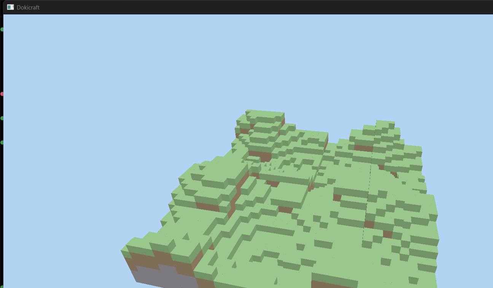

Dokicraft Engine Tutorial: A Field Guide For Unreal Developers¶
This page is meant to teach you how the Dokicraft engine works, from the first line of main() to the pixels in the screenshot below, and how to approach extending it. It's written for an experienced gameplay programmer coming from Unreal Engine. You already know what a frame is, what a PSO is for, and why threading the renderer is hard. What you probably haven't done is own all of it yourself, with no RHI, no RDG, and no engine underneath you. That's the fun part.

Everything in this doc references real code in this repo at time of writing. When the code and this page disagree, trust the code and let us know so we can fix the page.
What You'll Learn¶
- How the engine boots, renders, and shuts down, mapped onto the UE concepts you already have.
- The handful of Vulkan ideas UE's RHI has been hiding from you (and why they're less scary than their reputation).
- How the voxel scene gets generated and drawn.
- Concrete recipes for extending the engine: a fly camera, an ImGui HUD, real chunk meshing, textures, physics, and gameplay via ECS.
The Big Picture¶
Dokicraft is a from-scratch C++20 voxel survival engine targeting Windows and high-end GPUs. Think Minecraft-like gameplay at higher fidelity: smaller voxels, modern lighting, streamed worlds. The architecture decisions came out of a research pass you can read in full, with citations, here:
Research report:
research/RESEARCH.md
The current stack, and why:
- Vulkan 1.3 - The rendering API. We use dynamic rendering and synchronization2, which cut most of the boilerplate Vulkan is infamous for. No render passes, no framebuffer objects.
- volk - A meta-loader for Vulkan. It loads function pointers at runtime so we don't link against a Vulkan SDK. The SDK isn't required to build or run.
- VMA (Vulkan Memory Allocator) - AMD's allocator library. It answers "which of the 11 memory types do I allocate this buffer in" so you mostly don't have to care.
- SDL3 - Windowing and input. Chosen over GLFW for the gamepad, audio, and haptics coverage a survival game will eventually want.
- shaderc - Runtime GLSL to SPIR-V compilation. Shaders compile when the game boots, which keeps the door open for hot reload.
- glm - Math. The de facto standard for Vulkan/OpenGL style projects.
- EnTT - ECS for gameplay code (linked, not yet used in the frame loop).
- Jolt - Physics (linked, integration comes with the survival gameplay phase).
- Dear ImGui - Debug and editor UI (in the dependency set, HUD recipe below).
The engine is a static library, doki_engine, consumed by a thin game executable, dokicraft. Here's the module map. GitHub renders this diagram inline; if you're reading locally, any Mermaid viewer works.
flowchart TD
subgraph game ["dokicraft (game exe)"]
Main["Main.cpp<br/>owns the loop"]
end
subgraph engine ["doki_engine (static lib)"]
Window["platform/Window<br/>SDL3"]
Context["render/VulkanContext<br/>instance, device, VMA"]
Swap["render/Swapchain"]
Renderer["render/Renderer<br/>frame loop, sync, depth"]
Pipeline["render/MeshPipeline<br/>+ ShaderCompiler"]
Mesh["render/GpuMesh<br/>vertex/index buffers"]
Terrain["scene/Terrain<br/>voxel gen"]
Camera["scene/Camera"]
end
Main --> Window
Main --> Context
Main --> Swap
Main --> Renderer
Main --> Pipeline
Main --> Mesh
Main --> Terrain
Main --> Camera
Context --> Swap
Swap --> Renderer
Pipeline --> RendererNote: the dependency arrows are deliberately shallow. Main.cpp composes everything explicitly, so you can read the whole engine boot top to bottom in one file. There's no reflection, no module registry, and no magic startup order to reverse-engineer.
Coming From Unreal: A Rosetta Stone¶
You don't need a UE-to-Vulkan dictionary memorized, but these mappings will make the rest of the page read faster.
- FEngineLoop /
Tick-Main.cppowns a plainwhile (window.pollEvents())loop. There's no engine loop object. You are the engine loop. - UBT +
.uproject- CMake presets plus a vcpkg manifest (vcpkg.json).cmake --preset windows-releaseis roughly "Generate Project Files" and "Build" folded together. - RHI - Gone. We call Vulkan directly through volk. The closest thing to an RHI layer is
VulkanContext. It's about 300 lines you can read in one sitting. - RDG passes and resource transitions - Done by hand with synchronization2 barriers in
Renderer::drawFrame. RDG's "declare reads/writes and let the graph schedule" becomes "you write the barrier yourself". It's the single biggest mindset shift. It's also covered in detail below. - PSO -
VkPipeline, built inMeshPipeline. Same idea, same immutability, same "build at load time, bind at draw time" rhythm. UE's PSO caching pain will feel familiar. - Material parameters / uniform buffers - Push constants for now (a tiny, fast constant block baked into the command buffer). Descriptor sets and UBOs arrive when the data outgrows 128 bytes. Both are covered in the recipes.
- GameThread / RenderThread split - There isn't one yet. One thread does everything. Frames-in-flight (below) is what keeps the GPU busy anyway.
- FVector and friends - glm. Watch the conventions: this engine is Y-up and right-handed, and one world unit is one voxel. UE is Z-up, left-handed, in centimeters. If you port math from UE muscle memory, swap Y and Z and re-check your cross products.
- AActor / UActorComponent - Nothing yet. Gameplay will land in EnTT, which is closer to Mass than to Actors. There's a recipe below.
- Chaos - Jolt, integrated at the survival-gameplay phase. The integration pattern is already researched and documented.
- Slate / UMG - Dear ImGui for debug UI now, RmlUi (HTML/CSS, fully open source) as the candidate for shipping game UI later.
check()/ensure()-VK_CHECK(expr)aborts with the file, line, and failing expression on any Vulkan error. Fail fast and fix fast.
Note: the coordinate and unit differences are the one place UE instincts will actively betray you. When something renders upside down or orbits the wrong way, check the Y-flip in Camera (explained below) before you suspect the matrix math.
Step 0: Get It Building¶
You'll want a working build before reading further so the code excerpts have something to diff against.
- Prerequisites: Visual Studio 2022 or newer with the C++ workload, CMake 3.28+, Ninja, and Git. No Vulkan SDK needed, just a Vulkan-capable GPU driver.
- Clone and bootstrap:
git clone https://github.com/defessler/Dokicraft.git
cd Dokicraft
git clone --depth 1 https://github.com/microsoft/vcpkg.git extern/vcpkg
extern\vcpkg\bootstrap-vcpkg.bat -disableMetrics
- Build and run. From any shell:
pwsh -File Tools/Build.ps1 -Preset windows-release
build\windows-release\bin\dokicraft.exe
Tools/Build.ps1 finds Visual Studio with vswhere and enters the VS dev shell for you, which is what makes Ninja plus cl work outside a Developer Command Prompt. The first configure builds all 16 dependencies from source through vcpkg and takes a few minutes. After that, builds are incremental and fast.
A few build-system details worth knowing because they'll bite you if you fight them:
- vcpkg manifest mode -
vcpkg.jsonat the repo root declares dependencies with a pinned baseline, so a clean clone always resolves the same versions. Think of it as the dependency half of a.uproject. - Warnings as errors, scoped - Project targets compile with
/W4 /WX, but vcpkg headers are included via MSVC's/external:anglebrackets /external:W0, so third-party warnings can't break our build. Include project headers with quotes and dependencies with angle brackets to keep that split working. VK_NO_PROTOTYPES- Defined project-wide. It tells the Vulkan headers not to declare linkable function prototypes, because volk supplies every entry point at runtime. If you ever see "unresolved external symbol vkCreateDevice", something bypassed volk.
The Six Building Blocks¶
To understand the engine, you need to understand six main building blocks. Each one is a class you can read in full in a few minutes. Each maps to something you already know from UE.
1. Window (SDL3)¶
This is where the OS window and the event pump live. It's the analog of the game viewport plus the platform application layer, minus about two hundred thousand lines.
You can find the implementation here:
src/engine/src/platform/Window.cpp
The interesting part is how little there is. pollEvents drains SDL's queue and returns false when it's time to quit:
bool Window::pollEvents()
{
SDL_Event event;
while (SDL_PollEvent(&event))
{
if (event.type == SDL_EVENT_QUIT)
{
return false;
}
...
if (event.type == SDL_EVENT_KEY_DOWN && event.key.key == SDLK_ESCAPE)
{
return false;
}
}
return true;
}
In UE terms, this loop is where the platform message pump, the input subsystem, and RequestEngineExit all collapse into one function. When you add real input handling (see the fly camera recipe), this is the function that grows.
2. VulkanContext (Instance, Device, Queue, VMA)¶
This owns everything that lives for the whole session: the VkInstance, the physical and logical device, the graphics queue, and the VMA allocator. It's the closest thing we have to an RHI. It's created once in main() and torn down at exit.
You can find the implementation here:
src/engine/src/render/VulkanContext.cpp
Three things in it deserve your attention.
First, the volk boot dance. Vulkan has no import library in our build, so entry points load in three waves: volkInitialize() finds the loader DLL, volkLoadInstance() loads instance-level functions after the instance exists, and volkLoadDevice() loads device-level functions after the device exists. The constructor reads exactly in that order:
VK_CHECK(volkInitialize());
createInstance();
volkLoadInstance(m_instance);
createSurface(window);
pickPhysicalDevice();
createLogicalDevice();
volkLoadDevice(m_device);
Second, device selection. This machine exposes three adapters (an RTX 5090, an Intel iGPU, and a Parsec virtual display), and naive "take device zero" code will happily render your voxels on the wrong one. pickPhysicalDevice requires a graphics-and-present queue, the swapchain extension, and the Vulkan 1.3 features we depend on, then scores discrete GPUs a thousand points ahead of everything else. The log tells you what won:
[doki][INFO ] Selected GPU: NVIDIA GeForce RTX 5090 (Vulkan 1.4.341)
Third, the feature request. We turn on dynamicRendering and synchronization2 (Vulkan 1.3 core), plus bufferDeviceAddress and descriptorIndexing from 1.2, which the GPU-driven rendering phase will want. Requesting features at device creation is Vulkan's version of checking GRHISupportsX flags, except you ask up front. The device simply refuses to be created if the hardware can't do it.
Note: validation layers (Vulkan's equivalent of the D3D debug layer plus a very good RHI validation suite) only exist if a Vulkan SDK is installed. The engine detects their absence and runs without them rather than failing. If you install the LunarG SDK, they light up automatically on the next run. Treat any validation error as a real bug.
3. Swapchain¶
The swapchain is the backbuffer chain: the set of images the OS compositor will actually put on screen. UE hides this behind the viewport; here it's about 150 lines.
You can find the implementation here:
src/engine/src/render/Swapchain.cpp
Decisions it makes, and why:
- Format - Prefers
VK_FORMAT_B8G8R8A8_SRGB, so the hardware handles gamma on write and our fragment shaders think in linear color. Same convention UE renders with. - Present mode - Prefers mailbox (low-latency triple buffering, no tearing) and falls back to FIFO, which is plain vsync and the only mode Vulkan guarantees everywhere.
- Image count - Asks for minimum plus one to reduce acquire stalls.
There are no framebuffer or render pass objects anywhere in it. Dynamic rendering means we attach image views directly at draw time, which removes the most confusing third of classic Vulkan tutorials.
4. Renderer (The Frame Loop)¶
This is the heart of the engine and the file to read most carefully. It owns per-frame command buffers, the synchronization objects, and a depth buffer. Every frame it runs acquire, record, submit, and present.
You can find the implementation here:
src/engine/src/render/Renderer.cpp
It deliberately doesn't know what a voxel is. The scene hands it a callback:
using RecordSceneFn = std::function<void(VkCommandBuffer cmd, VkExtent2D extent)>;
void drawFrame(const float clearColor[4], const RecordSceneFn& recordScene);
The renderer opens the "render pass" (clears color and depth, sets up attachments), calls your callback to record draws, closes it, and handles presentation. It's a tiny, explicit version of what RDG's pass lambdas do. A full frame walkthrough gets its own section below.
5. MeshPipeline And ShaderCompiler¶
MeshPipeline builds the one graphics pipeline the scene currently needs: vertex color times a directional light, depth tested, no culling yet. ShaderCompiler wraps shaderc so the GLSL compiles when the pipeline is constructed.
You can find the implementations here:
src/engine/src/render/MeshPipeline.cpp
src/engine/src/render/ShaderCompiler.cpp
The shaders are embedded GLSL string literals in MeshPipeline.cpp at time of writing. That's a deliberate stage-one choice: no asset paths to break while the pipeline count is one. They'll move to shaders/ files once hot reload lands. The fragment shader is a plain diffuse with an ambient floor:
vec3 normal = normalize(vNormal);
vec3 toLight = normalize(-pc.lightDirection.xyz);
float diffuse = max(dot(normal, toLight), 0.0);
float ambient = 0.28;
float intensity = ambient + (1.0 - ambient) * diffuse;
outColor = vec4(vColor * intensity, 1.0);
Camera and light data travel as push constants, which is Vulkan's fast path for small per-draw data:
struct MeshPushConstants
{
glm::mat4 viewProj; // 64 bytes
glm::vec4 lightDirection; // 16 bytes
};
That's 80 bytes against Vulkan's guaranteed minimum budget of 128. We're comfortably inside the portable limit. When per-draw data outgrows it (and it will, the moment textures arrive), the uniform buffer recipe below is the graduation path.
One UE-relevant note on pipeline state: everything except viewport and scissor is baked into the VkPipeline at creation. Blend mode, depth test, vertex layout, and shaders are immutable per pipeline, exactly like a PSO. Viewport and scissor are declared dynamic so window resizes don't force a pipeline rebuild.
6. GpuMesh, Terrain, And Camera¶
GpuMesh uploads vertex and index data into VMA-allocated buffers and issues the indexed draw. The upload currently writes straight into host-visible mapped memory:
VmaAllocationCreateInfo allocInfo{};
allocInfo.usage = VMA_MEMORY_USAGE_AUTO;
allocInfo.flags = VMA_ALLOCATION_CREATE_HOST_ACCESS_SEQUENTIAL_WRITE_BIT |
VMA_ALLOCATION_CREATE_MAPPED_BIT;
On a modern card with resizable BAR this lands in memory that's both host-visible and device-local. That's fast enough for static scene geometry. Staged uploads through a transfer queue come when chunk streaming does, so treat the current path as "good enough on purpose".
Terrain generates the placeholder world: a 32x32 grid of columns, heights from deterministic value noise blended with a couple of sine waves, one colored cube per solid voxel, banded grass, dirt, and stone by depth. The same seed always produces the same terrain, which is what makes the smoke test's screenshot comparisons meaningful.
You can find the generator here:
src/engine/src/scene/Terrain.cpp
Camera is a look-at perspective camera with the two lines that trip up everyone who comes to Vulkan from anywhere else:
glm::mat4 proj = glm::perspective(fovYRadians, aspect, nearZ, farZ);
proj[1][1] *= -1.0F; // Vulkan clip-space Y points down
We also define GLM_FORCE_DEPTH_ZERO_TO_ONE project-wide because Vulkan's depth range is 0 to 1, not OpenGL's -1 to 1. If you remove either of these you'll get an upside-down scene or a broken depth test. Now you know which file to check first.
A Frame, From Acquire To Present¶
This is the part UE never let you touch. Here's the sequence Renderer::drawFrame runs, then the three ideas inside it that matter.
sequenceDiagram
participant CPU as CPU (drawFrame)
participant GPU as GPU queue
participant WSI as Swapchain/Present
CPU->>CPU: wait fence (frame N-2 done)
CPU->>WSI: vkAcquireNextImageKHR
WSI-->>CPU: image index + imageAvailable semaphore
CPU->>CPU: record commands<br/>(barrier, clear, draws, barrier)
CPU->>GPU: vkQueueSubmit2<br/>wait imageAvailable, signal renderFinished, signal fence
GPU->>GPU: execute command buffer
CPU->>WSI: vkQueuePresentKHR (waits renderFinished)
WSI-->>WSI: image on screenFirst idea: frames in flight. The CPU doesn't wait for the GPU to finish a frame before starting the next one. We keep two frames of command buffers and sync objects (kFramesInFlight = 2). The CPU records frame N+1 while the GPU draws frame N. The fence at the top of drawFrame is the throttle: it blocks only if the GPU is a full two frames behind. This is the same pipelining UE gets from its render thread, achieved with zero extra threads.
Second idea: semaphores vs fences. Both are new if the RHI always did it for you. A fence lets the GPU signal the CPU ("that command buffer is done, you can reuse it"). A semaphore lets one GPU operation wait on another without the CPU involved ("don't start rendering until the swapchain image is actually available, don't present until rendering is done"). One detail worth copying if you ever write this yourself: the render-finished semaphores are per swapchain image, not per frame in flight, which avoids a subtle validation error when the two counts differ.
Third idea: image layout transitions. Vulkan images live in explicit layouts (undefined, color attachment, present source, etc.). You insert barriers to move between them. This is what RDG transitions compile down to. Our frame does three: acquired image to color attachment, depth image to depth attachment, and rendered image to present source. The helper in Renderer.cpp shows the synchronization2 shape:
transitionImage(cmd, swapImage,
VK_IMAGE_LAYOUT_UNDEFINED, VK_IMAGE_LAYOUT_COLOR_ATTACHMENT_OPTIMAL,
VK_IMAGE_ASPECT_COLOR_BIT,
VK_PIPELINE_STAGE_2_TOP_OF_PIPE_BIT, 0,
VK_PIPELINE_STAGE_2_COLOR_ATTACHMENT_OUTPUT_BIT,
VK_ACCESS_2_COLOR_ATTACHMENT_WRITE_BIT);
Read it as "everything before this point in stage X with access Y must complete before anything after it in stage Z with access W, and change the layout while you're at it". Once that sentence parses, you can read any barrier in any Vulkan codebase.
Resize is handled where acquire or present return VK_ERROR_OUT_OF_DATE_KHR: rebuild the swapchain, the per-image semaphores, and the depth buffer, then skip the frame. Minimized windows just skip drawing entirely (see the loop in Main.cpp).
How The Scene Gets Assembled¶
Main.cpp is short enough to read whole. Here's just the shape:
doki::Window window("Dokicraft", 1280, 720);
doki::VulkanContext context(window.handle());
doki::Swapchain swapchain(context, width, height);
doki::Renderer renderer(context, swapchain, window);
doki::MeshPipeline pipeline(context, renderer.colorFormat(), renderer.depthFormat());
const doki::TerrainMesh terrain = doki::generateTerrain(32, 1337U);
const doki::GpuMesh mesh(context.allocator(), terrain.vertices, terrain.indices);
while (window.pollEvents())
{
// orbit camera, build push constants...
renderer.drawFrame(skyBlue, [&](VkCommandBuffer cmd, VkExtent2D extent) {
// set viewport + scissor
pipeline.bind(cmd);
pipeline.pushConstants(cmd, push);
mesh.draw(cmd);
});
}
Construction order is destruction order reversed. Every object takes what it needs by reference. If you've fought UE subsystem initialization order, you'll appreciate how boring this is. The camera orbits the terrain on a timer for now so the scene reads as 3D before any input handling exists. Making it player-controlled is the first recipe below.
Extending It: Recipes¶
Each recipe says why you'd do it and where it hooks in, then sketches the code. The sketches are written for this codebase but they're not in the repo yet. Treat them as a starting point and feel free to reshape them.
Recipe: A Fly Camera¶
It's the natural first project. It touches input, per-frame state, and math all at once. Grow Window to expose input state instead of just a quit flag:
struct InputState
{
glm::vec2 mouseDelta{0.0F};
bool keyDown[SDL_SCANCODE_COUNT] = {};
bool quit = false;
};
Fill it in pollEvents from SDL_EVENT_MOUSE_MOTION (accumulate event.motion.xrel and yrel) and SDL_EVENT_KEY_DOWN / SDL_EVENT_KEY_UP. Call SDL_SetWindowRelativeMouseMode(m_window, true) for FPS-style mouse capture. Then keep yaw and pitch in Main.cpp and rebuild the camera each frame:
yaw += input.mouseDelta.x * kSensitivity;
pitch = glm::clamp(pitch - input.mouseDelta.y * kSensitivity, -1.5F, 1.5F);
const glm::vec3 forward{std::cos(pitch) * std::cos(yaw), std::sin(pitch),
std::cos(pitch) * std::sin(yaw)};
const glm::vec3 right = glm::normalize(glm::cross(forward, {0.0F, 1.0F, 0.0F}));
if (input.keyDown[SDL_SCANCODE_W]) { position += forward * speed * dt; }
// ... A/S/D/Q/E ...
camera.position = position;
camera.target = position + forward;
Remember the handedness note from the Rosetta Stone: Y is up here and the cross product order above matters.
Recipe: The ImGui Debug HUD¶
The imgui vcpkg dependency is already in the manifest with the sdl3-binding and vulkan-binding features, so the backends are compiled and waiting. Wire-up steps: initialize ImGui_ImplSDL3_InitForVulkan and ImGui_ImplVulkan_Init after the renderer exists, feed SDL events to ImGui_ImplSDL3_ProcessEvent inside Window::pollEvents, and record ImGui_ImplVulkan_RenderDrawData(ImGui::GetDrawData(), cmd) at the end of the scene callback so the HUD draws over the world.
IMPORTANT: the vcpkg ImGui Vulkan backend is compiled without VK_NO_PROTOTYPES, while our engine loads everything through volk. Call ImGui_ImplVulkan_LoadFunctions before ImGui_ImplVulkan_Init and forward it to volk, or every ImGui Vulkan call will crash at startup:
ImGui_ImplVulkan_LoadFunctions(VK_API_VERSION_1_3,
[](const char* name, void* userData) {
return vkGetInstanceProcAddr(static_cast<VkInstance>(userData), name);
},
context.instance());
ImGui's Vulkan backend also wants a descriptor pool and your attachment formats (use renderer.colorFormat() and renderer.depthFormat() with its dynamic rendering path). The official example in the ImGui repo, examples/example_sdl3_vulkan, is the reference to crib from.
Recipe: Real Chunks And Binary Greedy Meshing¶
This is the milestone that turns "a scene" into "a world". It's where the research earns its keep. The current Terrain emits six faces per solid voxel with no culling, which is fine for 32x32 and hopeless at scale. The plan:
- Store voxels in fixed-size chunks. The research favors small render chunks (Project Ascendant uses 8x8x8) grouped into larger streaming regions, but a straightforward first cut is a 62x62x62 payload in a 64x64x64 array, because the meshing algorithm wants a one-voxel neighbor apron.
- Replace cube emission with face culling: only emit a face where solid meets air. That alone cuts geometry by an order of magnitude.
- Then adopt binary greedy meshing. Pack solidity into 64-bit column masks so face culling becomes bit math (
faces = column & ~(column >> 1)and friends), then merge adjacent same-type faces into large quads with more bit scans. The reference implementation meshes a whole chunk in 50 to 200 microseconds single-threaded and outputs 8-byte packed quads. The algorithm is readable in an afternoon, check it out: https://github.com/cgerikj/binary-greedy-meshing - Emit packed quads instead of fat vertices. Six bits each for x, y, z, width, and height, plus a face id and a voxel type. Unpack in the vertex shader by indexing with
gl_VertexIndex. YourVertexstruct shrinks from 36 bytes per vertex to 8 bytes per quad. - One draw call per chunk is fine for dozens of chunks. The endgame per the research is one
vkCmdDrawIndexedIndirectCountfor everything, with a compute shader writing the draw list (GPU-driven culling).bufferDeviceAddressanddescriptorIndexingare already enabled on the device for exactly this.
Note: keep the deterministic seed discipline from generateTerrain when you build real worldgen. The smoke test anchors on a fixed-seed world. Future you will want screenshots that diff cleanly.
Recipe: Textures (Your First Descriptor Set)¶
Push constants can't hold a texture. This recipe forces the remaining big Vulkan concept: descriptors. The five-step shape, using stb from the research stack (add the stb port to vcpkg.json):
- Load pixels with
stbi_load. - Create a
VkImagethrough VMA, copy pixels in, and transition it toVK_IMAGE_LAYOUT_SHADER_READ_ONLY_OPTIMALwith a one-shot command buffer. - Create a
VkImageViewand aVkSampler(nearest-neighbor filtering is the correct look for a voxel atlas). - Create a
VkDescriptorSetLayoutwith one combined image sampler binding, aVkDescriptorPool, allocate a set, and point it at your view and sampler withvkUpdateDescriptorSets. - Add the layout to the
VkPipelineLayoutinMeshPipeline, bind the set withvkCmdBindDescriptorSetsbefore drawing, and sample it in the fragment shader via alayout(set = 0, binding = 0) uniform sampler2D.
A descriptor set is just a bundle of shader-visible resource handles. If you think of it as "the Vulkan spelling of a material's texture parameters", you have the right intuition. UV coordinates ride in as a new Vertex attribute (or come along for free once you're unpacking greedy-meshed quads in the vertex shader).
Recipe: From Push Constants To Uniform Buffers¶
When per-frame data outgrows 128 bytes (camera plus fog plus lighting rig plus time), move it into a UBO: one VkBuffer per frame in flight (host-visible, persistently mapped, just like GpuMesh does), written by the CPU each frame, exposed to shaders through the same descriptor machinery as the texture recipe. Per-frame duplication exists for the same reason kFramesInFlight does: frame N+1's CPU writes must not stomp a buffer the GPU is still reading for frame N.
Recipe: Physics With Jolt¶
Jolt is already linked. The integration pattern for voxel terrain comes from Jolt's own author (the research report links the full discussion):
- One
Bodywith aStaticCompoundShapeper chunk. - A small set of shared
BoxShapeinstances reused across every block of the same size, not one shape allocation per block. - Batch-add bodies and call
PhysicsSystem::OptimizeBroadPhaseafter loading a wave of chunks. - Rebuild a chunk's compound shape when it's edited, and wake sleeping bodies nearby.
He confirms 100k static bodies is comfortable territory. A body per chunk scales well past anything we'll need for a while. Step the simulation once per frame from the main loop (PhysicsSystem::Update with fixed 1/60 collision steps). Then read body transforms when you build render matrices. Character movement wants Jolt's CharacterVirtual, which is the rough equivalent of UE's CharacterMovementComponent mode of interacting with the world, minus the networking.
Recipe: Gameplay In EnTT¶
EnTT is closer to Mass than to Actors: entities are integer ids, components are plain structs, and systems are free functions iterating views. The pattern we suggest for this codebase:
struct Transform { glm::vec3 position; glm::quat rotation; };
struct Velocity { glm::vec3 linear; };
void integrateMovement(entt::registry& world, float dt)
{
for (auto [entity, transform, velocity] : world.view<Transform, Velocity>().each())
{
transform.position += velocity.linear * dt;
}
}
Call systems explicitly from the main loop in a fixed order. Resist the urge to build a scheduler until you have enough systems to need one. The mental shift from UE is that nothing Ticks itself: there's no PrimaryActorTick, just functions you call, which makes execution order a thing you read instead of a thing you debug.
Recipe: Tracy Profiling¶
Once frame times matter (the meshing milestone), add the tracy vcpkg port, wrap the main loop phases in ZoneScoped markers, and run the Tracy server app to get UE Insights-quality flame graphs with about ten lines of integration. The research flagged this as worth adopting early. We agree.
Conventions And Gotchas¶
House rules so your extensions land cleanly. The full profile lives in CLAUDE.md.
- Style - 4-space indent, 120-column lines, Allman braces, always brace single statements.
.clang-formatat the repo root enforces the mechanical parts. Run it on anything you touch. - Naming - PascalCase types and functions, camelCase locals and parameters,
m_members, SCREAMING_CASE constants, everything under namespacedoki. - Copyright - Every source file starts with
// Copyright (c) defessler. - Include order trap - volk before VMA, always.
vk_mem_alloc.hbinds to whatever Vulkan declarations it sees. It must see volk's. The headers that need both already do it correctly, so follow their lead. - glm defines -
GLM_FORCE_DEPTH_ZERO_TO_ONEandGLM_FORCE_RADIANSare set on the engine target. Don't include glm in a way that dodges them. - The multi-GPU trap - Never index physical devices directly.
pickPhysicalDeviceexists because this dev machine will hand you a virtual display adapter if you let it. - No per-frame allocations - The frame loop allocates nothing after startup. It should stay that way as far as practical. It's much easier to keep a loop allocation-free than to win the memory back later.
Where This Is Headed¶
The roadmap, decisions, and their rationale live in two documents that are kept current as the engine grows:
Plan and ledger:
Docs/PLAN.md
Research report with citations:
research/RESEARCH.md
The near-term arc: real chunked worldgen with binary greedy meshing, GPU compute culling with indirect draws, then the lighting jump (sun plus ambient occlusion first, probe-based DDGI later). The far-field plan is non-polygonal (per-voxel raycast quads, per the Ascendant writeup). Hardware ray tracing on RTX-class cards is an open question the research left explicitly unresolved. Plenty of room to leave your mark.
References¶
Primary sources behind the architecture (all verified during the research pass):
- vkguide's Project Ascendant series, the closest existing blueprint for this engine - https://vkguide.dev/docs/ascendant/
- vkguide proper, the best practical modern-Vulkan tutorial - https://vkguide.dev/
- Binary greedy meshing reference implementation - https://github.com/cgerikj/binary-greedy-meshing
- VoxelRT, benchmarks of voxel acceleration structures - https://github.com/dubiousconst282/VoxelRT
- Aokana, GPU-driven SVDAG voxel framework (i3D 2025 paper) - https://arxiv.org/html/2505.02017v1
- Douglas Dwyer's voxel devlogs (DDGI, Vulkan migration) - https://www.youtube.com/watch?v=L1vhle74AEU
- Jolt author on voxel-world integration - https://github.com/jrouwe/JoltPhysics/discussions/446
- Grobert's survey of voxel rendering techniques - https://grobert.eu/voxel-techniques/
- Luanti (ex-Minetest), the most mature open-source voxel survival engine, read for architecture rather than rendering - https://github.com/luanti-org/luanti
- Hazel Engine, a general-purpose reference for engine infrastructure shape - https://github.com/StudioCherno/Hazel
Library documentation you'll actually open:
- Vulkan spec and guide - https://docs.vulkan.org/
- volk - https://github.com/zeux/volk
- VMA - https://gpuopen-librariesandsdks.github.io/VulkanMemoryAllocator/html/
- SDL3 - https://wiki.libsdl.org/SDL3/FrontPage
- Dear ImGui - https://github.com/ocornut/imgui
- EnTT - https://github.com/skypjack/entt/wiki
- Jolt - https://jrouwe.github.io/JoltPhysics/
- glm - https://github.com/g-truc/glm
- shaderc - https://github.com/google/shaderc
This page will change over time as the engine does. If a section drifted from the code, the code wins. Updating this page is a welcome first contribution.